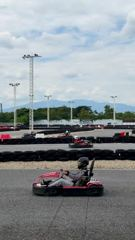
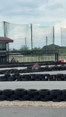
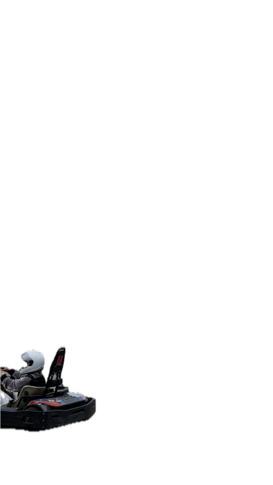
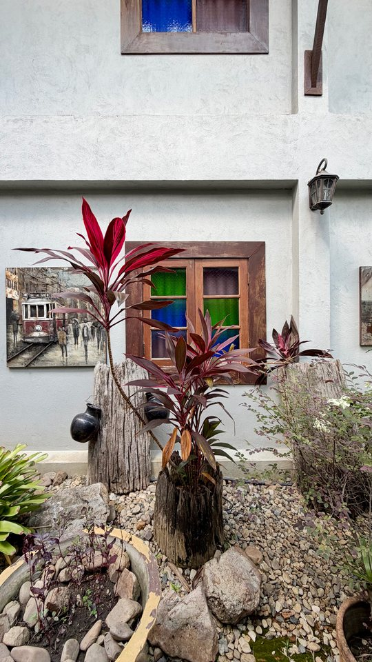
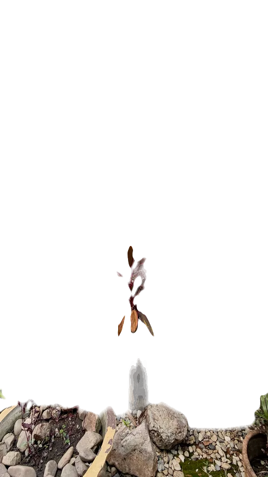

Drop in a trip.
Get back a reel.
Jauntcut edits travel videos on your Mac. Give it the photos and clips from a day out and a song, list the moments you want, and it does the rest: lands every cut on the beat, sets titles into the scene, checks the edit like a fussy editor, and renders a finished vertical reel. Your footage never leaves your Mac.
 IMG_2595.MOV · 5.1s
IMG_2595.MOV · 5.1s FF2905C1.jpg · photo
FF2905C1.jpg · photo FA7B11C8.jpg · photo
FA7B11C8.jpg · photo IMG_2618.MOV · 9.6s
IMG_2618.MOV · 9.6s
IMG_2616.MOV · 3.4s
GoPro.MP4 · 11.8s IMG_2601.HEIC · photo
IMG_2601.HEIC · photo IMG_2620.MOV · 10.2s0102030408
IMG_2620.MOV · 10.2s0102030408An editor that sits on your Mac, not a template.
Most reel apps paste your clips into the same template everyone uses. Jauntcut measures your footage first, then shapes the edit around it: where text can go, what can move in 3D, which shot runs too long.
Times every cut to the beat
You say which clips and how many beats each; it finds the song's tempo, lands every cut on a beat, and flags a slow opening, a shot held too long or the same scene twice.
Understands every frame
Cuts people and karts out of the background, measures depth, finds where the eye goes and where the faces are, all with Apple's on-device vision models.
Refuses a bad edit
Before anything renders, it checks length, pacing, text over faces, colour jumps and exposure, and tells you exactly which clip to fix.
Who it's for
- People who film trips on a phone or GoPro and want a reel that looks hand-cut.
- Creators who post often and want each place to get its own look.
- Developers who like their edits as code: diffable, repeatable, reviewable.
What you get
- A vertical 1080×1920, 60 fps reel, 20 to 45 seconds long.
- 11 title styles and 15 transitions, each one line in the edit file.
- No account, no upload, no watermark. Free under the MIT licence.
Four steps from camera roll to reel.
Collect
Drop the day's photos and clips in a folder. Jauntcut sorts them by place and time from their GPS.
Understand
On-device models map subjects, depth, attention and faces in every frame; beat analysis maps the song.
Edit
You write the edit as one small file: which clips, how many beats, which effects. Preview it live in the browser.
Check & render
Every rule runs before a single frame renders. Pass, and you get the finished reel and an upload copy.
The title sits on the tarmac. The karts drive over it.
Pull one frame of the Chiang Mai Circuit reel apart. These are the real layers from the render: scroll, and they separate.
 01 footage
01 footage 02 title, tracked to the road
02 title, tracked to the road
03 kart, cut out per frame- 01Tracked to the ground. The letters are pinned to the road surface and move with the camera, rising out of the tarmac on the beat.
- 02Cut out every frame. Apple Vision separates each kart from the background, frame by frame, so it drives in front of the words.
- 03Then it erases them. In the next shot a kart drives through "CIRCUIT" and wipes it away as it passes.
A still photo, sliced by depth.
A depth model estimates how far away every pixel is, then the photo is cut into planes. The camera moves through them like a slider shot, so a still from Versailles de Flore turns into a moving one.

far the whole photo plane 2
plane 2 plane 4
plane 4
plane 6 near plane 8
near plane 8- 01Depth, measured locally. Apple's Core ML build of Depth Anything V2 runs on the laptop. No cloud call.
- 02Near moves faster. Nearer planes push in faster than far ones, which is what reads as real depth.
- 03The far plane stays whole. Slicing distant depth streaked skies, so everything far away moves as one.

One frame, four readings.
Small Swift tools run Apple Vision and Core ML on your Mac and hand their results to the editor. This is a GoPro frame from the paramotoring reel.


Same engine, three different looks.
Each place gets its own type and transitions. Tap one to play it; shown without music.
Nothing renders until it passes.
Every rule reports what was actually produced, and a known problem stays a failure until it is fixed.
schemaBefore anythingInvalid or impossible edit settings fail in a second, not after a full render.
checkBefore renderMissing media, footage stretched past its pixels, clips running past their source, dead holds, text faster than 17 characters a second.
qa --preBefore renderThe same scene twice, text over faces, colour jumps at cuts, clipped highlights, skin tones off the skin line.
qa --postAfter renderBlack or frozen frames, loudness, the delivery file spec, leftover metadata.
timing-testEngine changesRenders frames that encode their own number and reads every one back: off by more than one frame fails.
regressEngine changesHashes one frame per second of every finished reel, so a new feature cannot quietly change an old one.
Thresholds come from measuring real footage. The same scene shown twice measured a distance of 0.21 to 0.42, different shots 0.49 or more, so the repeat check fails below 0.45.
One line in Terminal. That's the setup.
The installer checks your Mac, installs what's missing, downloads the depth model and tests itself. It never uses sudo, and running it again updates Jauntcut.
curl -fsSL https://jauntcut.com/install.sh | bash
Today it runs from Terminal. Next, an app.
One-line install
Sets up everything on a Mac and makes your first reel in six steps.
A Mac app
Drop in your footage, pick a look, render. No Terminal and no code.
Directed by a sentence
"Moody old village, slow" turned into a checked edit, with a look suggested from the music and footage.